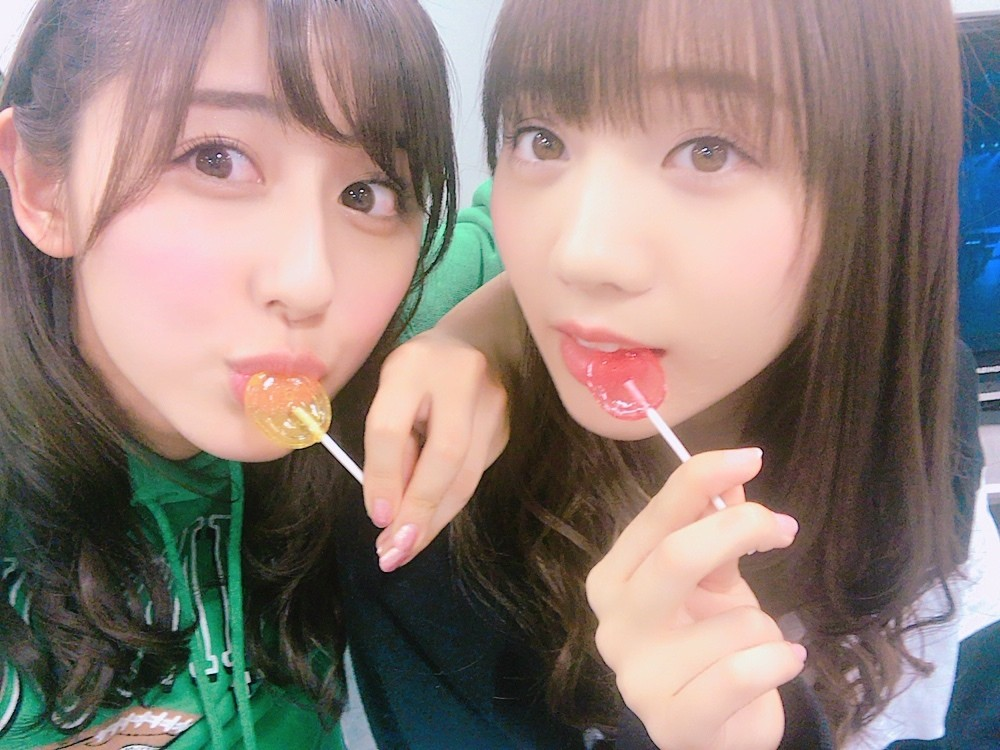
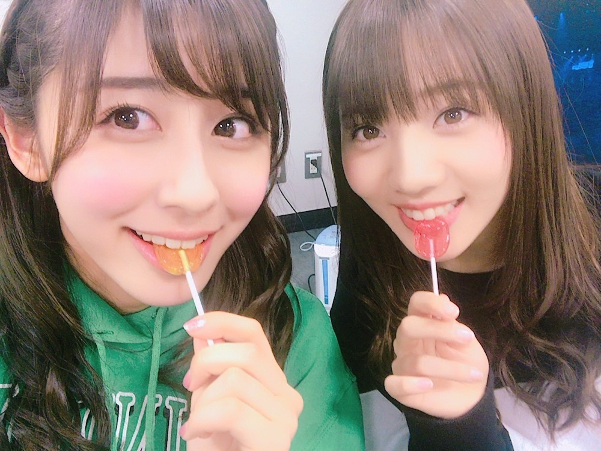
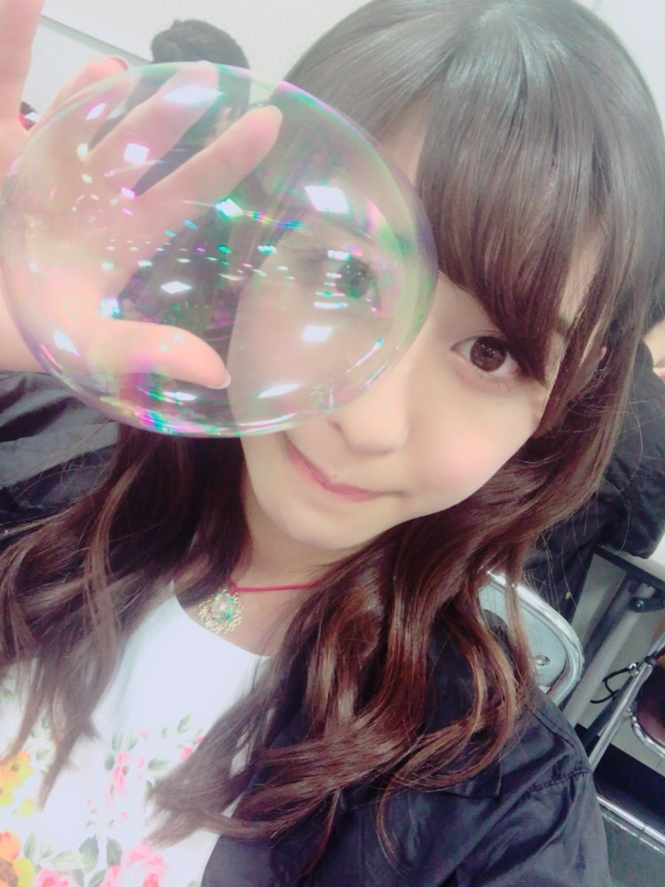

| 2017/02 27 Mon | 斎藤ちはる 風船は生きている |
昔から食べていたようなお菓子や
駄菓子が、たまーに食べたくなる。
ポン菓子や麩菓子やボンタンアメや
おこのみ餅や花串カステラやラムネや
餅太郎、ペロペロキャンディ...！
皆さんは何が好きでしたか( ¨̮ )( ¨̮ )( ¨̮ )？


私はレモン味。
愛未はイチゴ味。
美味しいね〜
懐かしいね〜
愛未は昔からイチゴ味しか食べなかったんだ〜
えー、わたしはレモン味ばっかりだった！
みたいな会話をしてました。笑
そういえば
３期生の与田ちゃん、
愛未に似てるって最近凄い思う...！
姉妹みたいにそっくり！！
梅澤ちゃんがまいちゅんに似ていたり
葉月ちゃんがらりんに似ていたり...
それぞれそれとなく似ているメンバーがいる気がする(﹡ˆ ˆ﹡)
みんなと仲良くなりたいな☺︎
------------------------------------------------♡
3/5のラジオ、「乃木坂46の、の！」
にみおなと琴子と三人で出演します！
珍しい3人でしたが盛り上がった☺︎
琴子が沢山笑ってくれて
嬉しかったな〜☺︎
そしてここで17thの楽曲の中から
２曲も初解禁します！！
どの曲がお披露目されるのでしょうか...
お楽しみに♡
そして17thアンダー曲は
「風船は生きている」に決定いたしました！
type C に収録されます。
MV撮影も本当楽しかったし
それでいてかっこいいし
皆さんに早くお見せしたい(> <)
これもまた、お楽しみに♡

風船...？
------------------------------------------------♡
♬ ChihaMusic
「キセキ」GReeeeNさん
今日天気が良くって気持ちが良くって
この曲を口ずさみながら
歌いながら歩いたんだ〜
側から見たら変な人だけど
誰もいなかったからいいよね...笑
何も考えずに歌い始めたのが
この曲だった。
単純に好きな曲なんだよね。
"うまく行かない日だって
2人で居れば晴れだって!"
韻を踏んでるここの歌詞が好き。
昔からこの曲好きだったけど
この先もずっとこの曲好きだと思う。
今日は月曜日！
ということでChihAnswer募集します☺︎
皆さんからの質問お待ちしています〜
おやすみ
斎藤ちはる